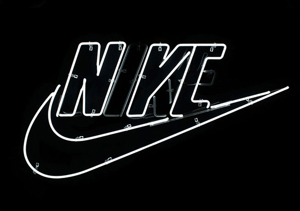

NIKE COMPANY
Fue fundada en 1964 como Blue Ribbon Sports por Bill Bowerman, un entrenador de pista y campo de la
Universidad de Oregon, y su ex alumno Phil Knight.
Abrieron su primera tienda minorista en el año 1966 y lanzaron el calzado de la marca Nike 4 años
después,
en 1972. La empresa pasó a llamarse Nike, Inc., en 1978 y se hizo pública (saliendo a cotización) dos
años
después
con la denominación Nike, Inc. Compañía americana, habiéndose denominado anteriormente Blue Ribbon
Sports
Nike, Inc., (desde 1964-78) siendo una empresa estadounidense de ropa deportiva con sede en Beaverton,
en el
Estado de Oregon. La compañía pasó a llamarse Nike, Inc., en 1978 y se hizo pública (salió a cotizar en
la
Bolsa) dos años después.
Desde finales de la década de los 1980, Nike expandió constantemente su negocio y
diversificó su línea
de productos a través de numerosas adquisiciones de otras compañías del sector (operaciones de
compraventa de empresas), incluidas las empresas de calzado Cole Haan (1988; vendida posteriormente en
2012) y Converse, Inc. (2003), el productor de equipos deportivos Canstar Sports, Inc. (1994; luego
llamado Bauer y vendida en 2008), y la empresa de ropa y equipos deportivos Umbro (2008; vendido en
2012), entre otras.

En 1996, la empresa creó lo que se conoce como Nike ACG (traducida como «equipo para
todas las
condiciones»), que comercializa productos para deportes extremos como el snowboard y el ciclismo de
montaña. A principios del siglo XXI, Nike comenzó a vender accesorios de tecnología deportiva, incluidos
monitores de frecuencia cardíaca portátiles y brújulas de muñeca para gran altitud, aumentando
considerablemente su gama de productos y lanzándose a la tecnología deportiva.
Parte del éxito de Nike se debe al respaldo de atletas y super estrellas como la leyenda del basketball
Michael Jordan, Mia Hamm, el tenista Roger Federer o el golfista Tiger Woods.
Las cadenas de tiendas NikeTown, la primera de las cuales se inauguró en el año 1990, rinden homenaje a
estos y otros prescriptores (embajadores de marca) de la empresa al tiempo que ofrecen a los
consumidores una gama completa de productos Nike.
En la década de los 1990, la imagen de la empresa sufrió brevemente a nivel de reputación corporativo,
fruto de revelaciones sobre las malas condiciones laborales en sus fábricas en el extranjero (países
donde apenas se respetan los derechos de los trabajadores) con las polémicas que genera el conocido como
outsourcing empresarial.
NIKE